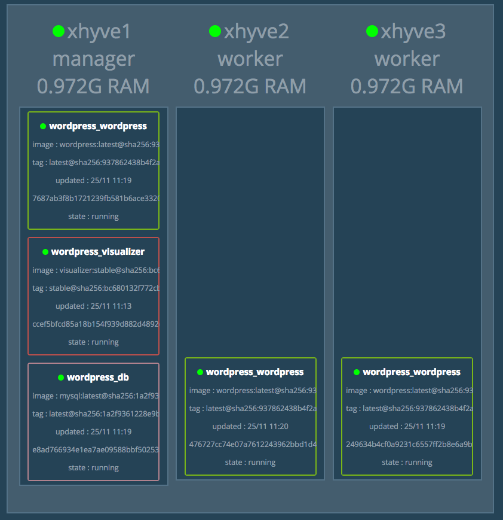

在 Swarm 集群中使用 compose
文件
正如之前使用 docker-compose.yml
来一次配置、启动多个容器，在 Swarm 集群中也可以使用
compose 文件 （docker-compose.yml）
来配置、启动多个服务。
上一节中，我们使用 docker service create
一次只能部署一个服务，使用 docker-compose.yml
我们可以一次启动多个关联的服务。
我们以在 Swarm 集群中部署 WordPress
为例进行说明。
1 2 3 4 5 6 7 8 9 10 11 12 13 14 15 16 17 18 19 20 21 22 23 24 25 26 27 28 29 30 31 32 33 34 35 36 37 38 39 40 41 42 43 44 45 46 47 version: "3" services: wordpress: image: wordpress ports: - 80 :80 networks: - overlay environment: WORDPRESS_DB_HOST: db:3306 WORDPRESS_DB_USER: wordpress WORDPRESS_DB_PASSWORD: wordpress deploy: mode: replicated replicas: 3 db: image: mysql networks: - overlay volumes: - db-data:/var/lib/mysql environment: MYSQL_ROOT_PASSWORD: somewordpress MYSQL_DATABASE: wordpress MYSQL_USER: wordpress MYSQL_PASSWORD: wordpress deploy: placement: constraints: [node.role == manager ]visualizer: image: dockersamples/visualizer:stable ports: - "8080:8080" stop_grace_period: 1m30s volumes: - "/var/run/docker.sock:/var/run/docker.sock" deploy: placement: constraints: [node.role == manager ]volumes: db-data: networks: overlay:
在 Swarm 集群管理节点新建该文件，其中的
visualizer
服务提供一个可视化页面，我们可以从浏览器中很直观的查看集群中各个服务的运行节点。
在 Swarm 集群中使用 docker-compose.yml
我们用 docker stack
命令，下面我们对该命令进行详细讲解。
部署服务
部署服务使用 docker stack deploy，其中 -c
参数指定 compose 文件名。
1 $ docker stack deploy -c docker-compose.yml wordpress
现在我们打开浏览器输入 任一节点IP:8080
即可看到各节点运行状态。如下图所示：

在浏览器新的标签页输入 任一节点IP 即可看到
WordPress 安装界面，安装完成之后，输入
任一节点IP 即可看到 WordPress 页面。
查看服务
1 2 3 $ docker stack ls
移除服务
要移除服务，使用 docker stack down
1 2 3 4 5 6 $ docker stack down wordpress
该命令不会移除服务所使用的
数据卷，如果你想移除数据卷请使用
docker volume rm